Início / EmeritosMentors
Distinções
EmeritosMentors
Mentores de trajetória internacional que a comunidade reconhece e honra como Beneméritos.
Mentores que, pela sua trajetória e pelo seu contributo para a comunidade internacional, recebem o reconhecimento de Beneméritos.
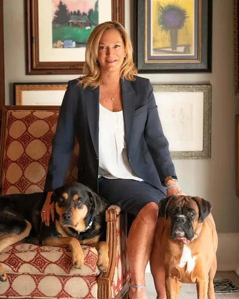
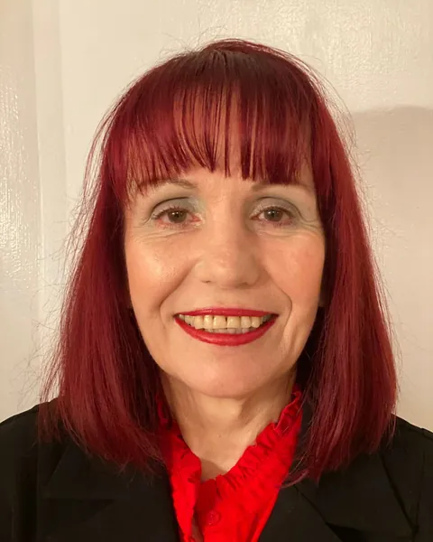
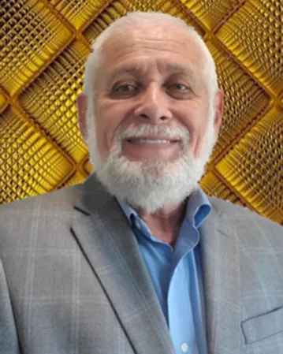
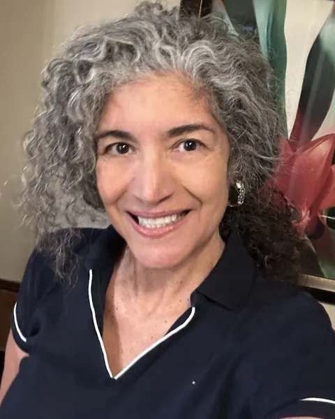
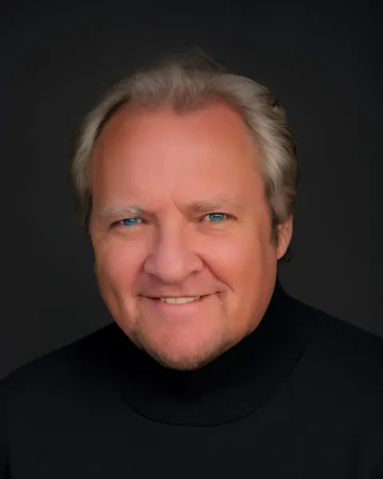
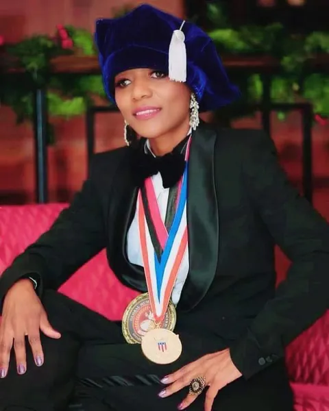
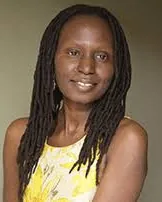
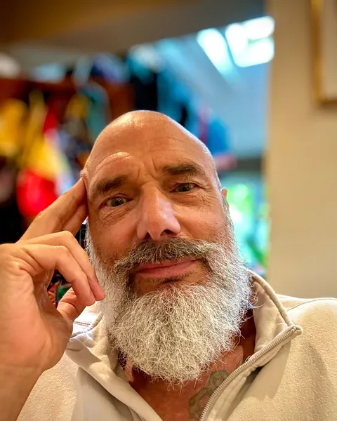
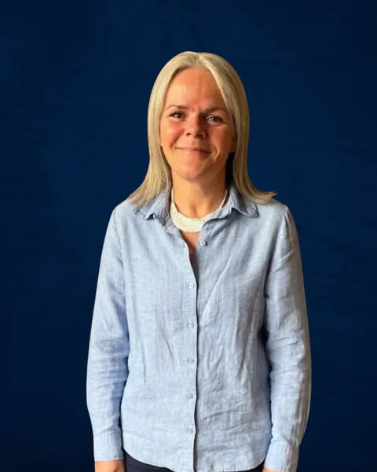
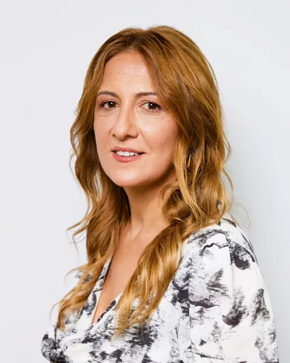
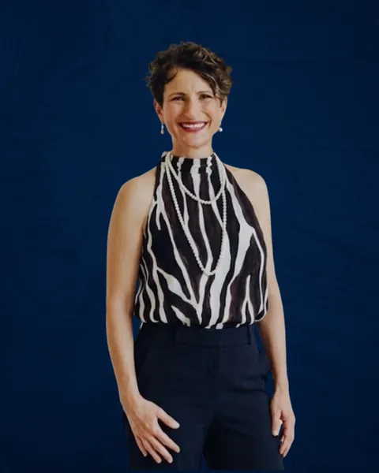
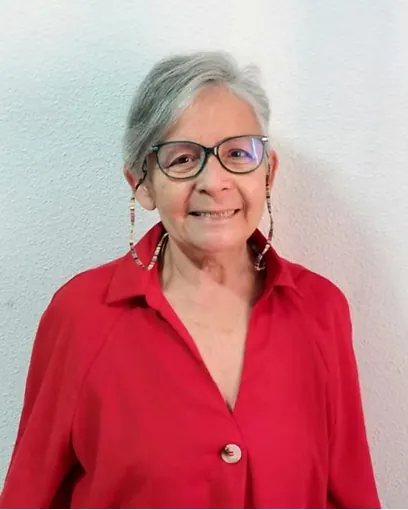
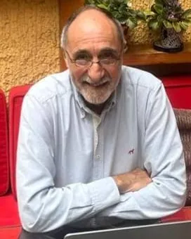
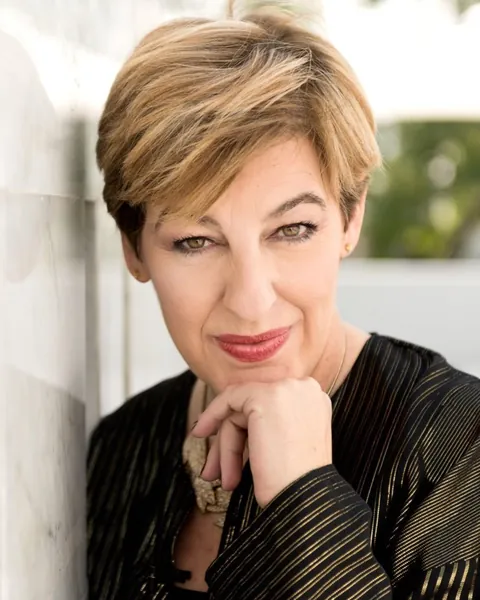
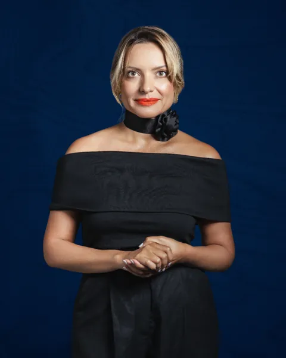
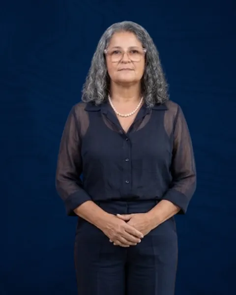
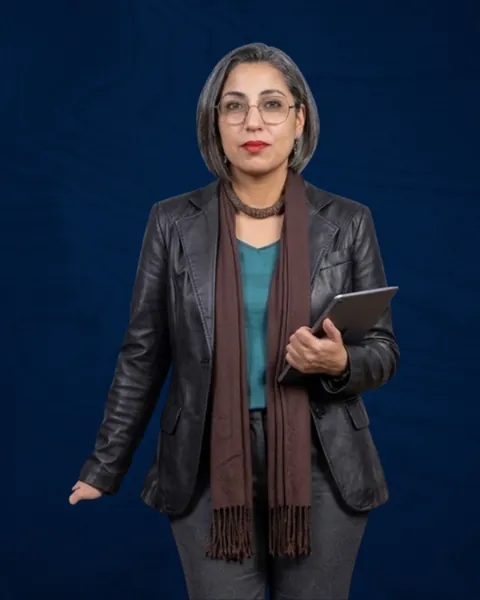
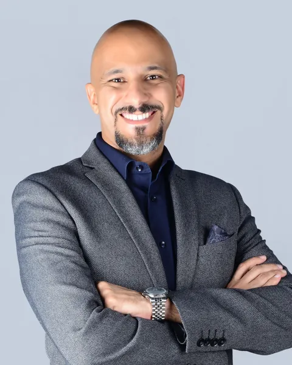
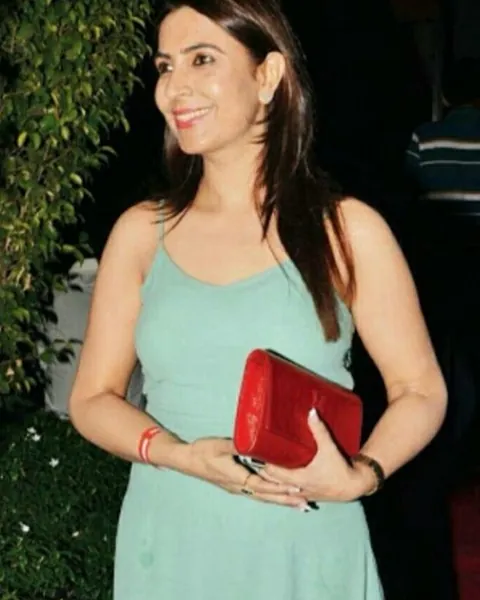
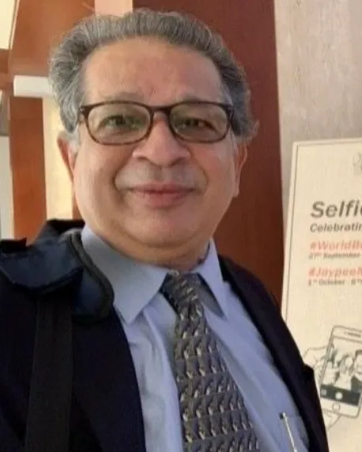
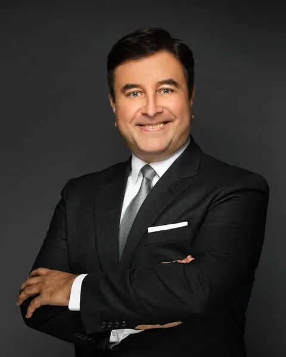
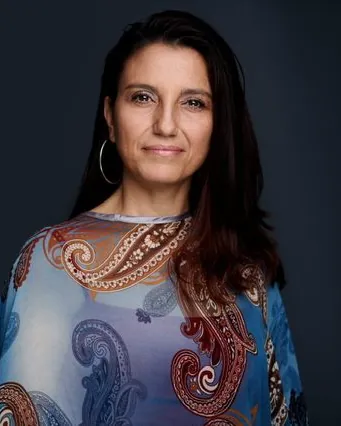
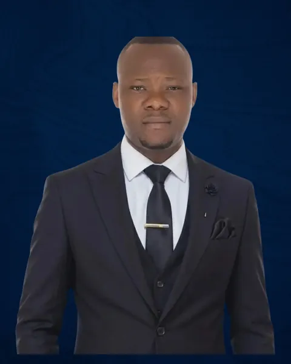
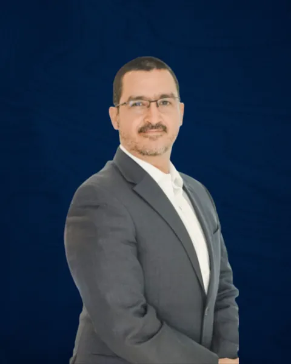
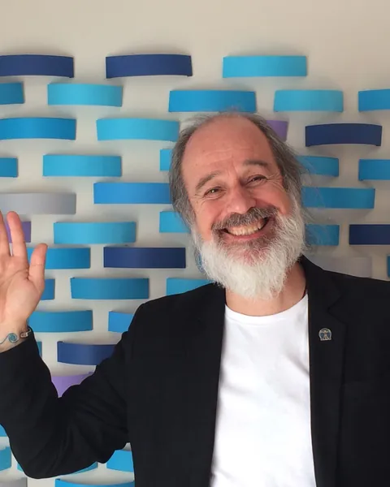
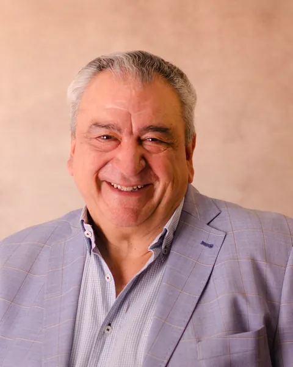
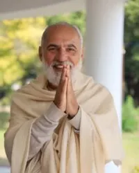
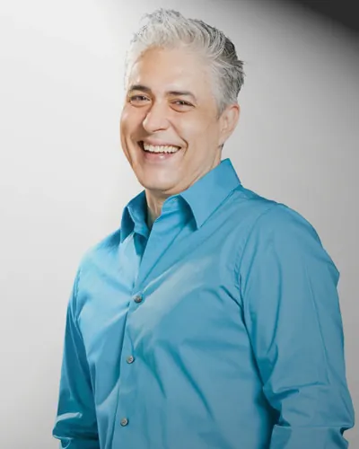
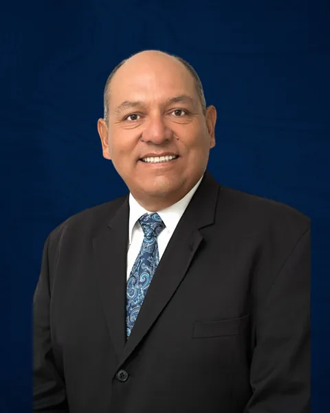
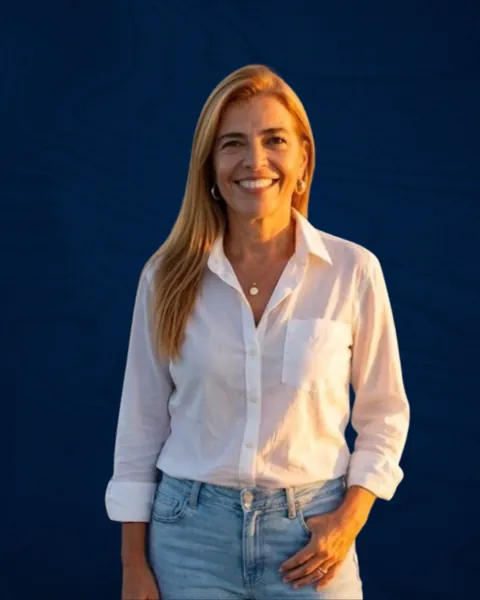
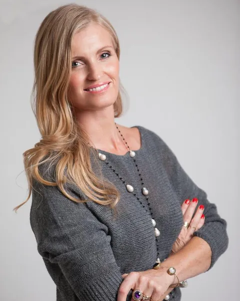